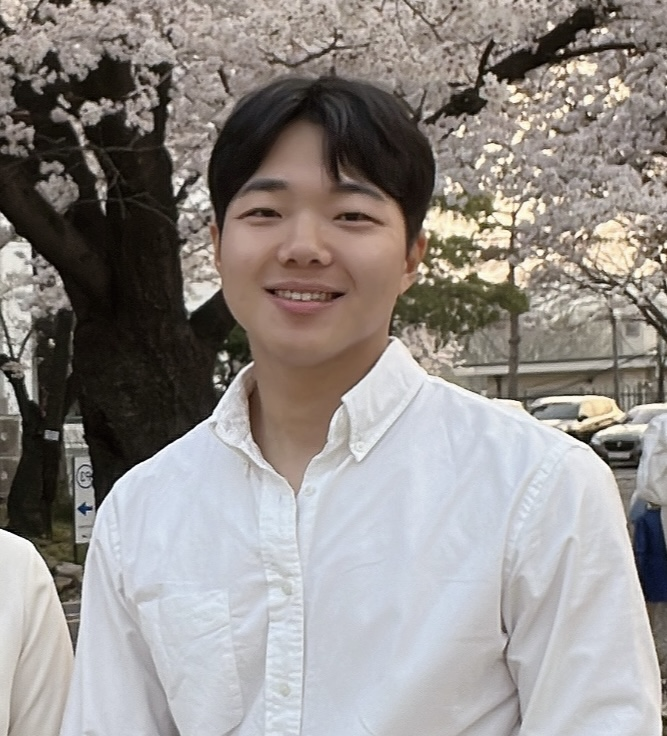
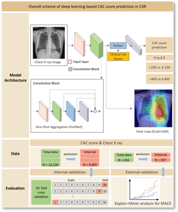
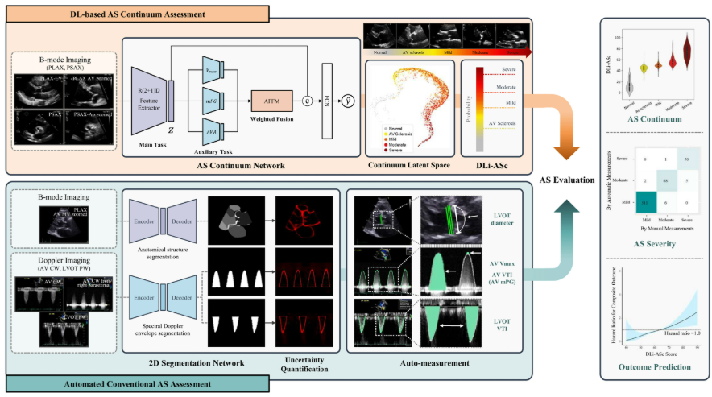
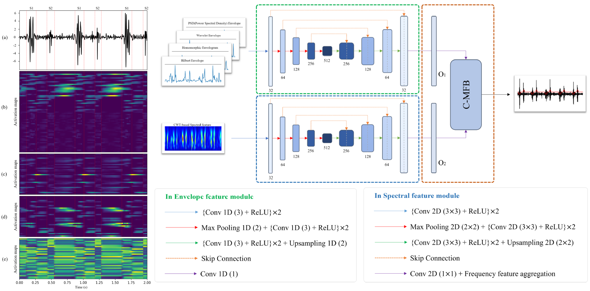
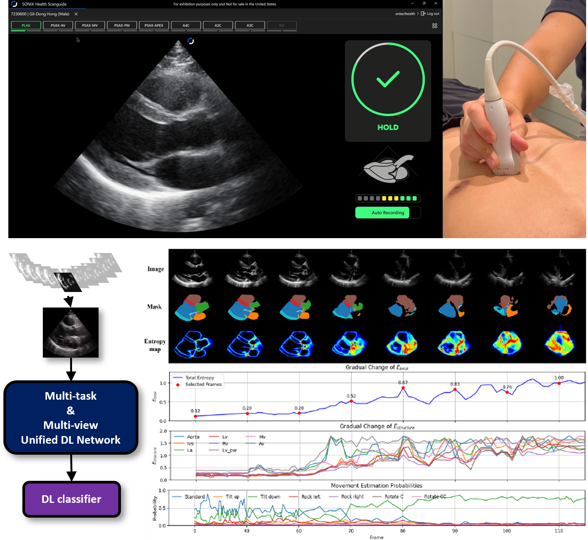
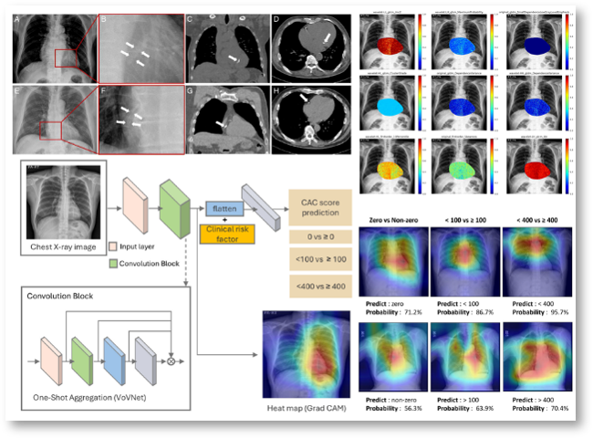

Hyunseok Jeong
Ph.D. · Postdoctoral Research Fellow
Division of Computer Engineering, Hankuk University of Foreign Studies
About
My research focuses on the intersection of artificial intelligence, medical imaging, and real-time guidance technologies, with the goal of enhancing diagnostic accuracy and accessibility in clinical practice. I am currently a postdoctoral research fellow at the Division of Computer Engineering, Hankuk University of Foreign Studies, working with Prof. Byunghwan Jeon.
Education
-
2020 – 2025
Ph.D. in Medical Science, Yonsei University College of Medicine Full scholarshipThesis: Deep learning-based real-time image quality assessment and guidance techniques for echocardiography standard view acquisition.
Advisor: Hyuk-jae Chang, MD, PhD -
2014 – 2020
B.S. in Physics, Yonsei UniversityMilitary service, Republic of Korea Army (2017 – 2018)
Experience
-
2026 – Now
Postdoctoral Research Fellow, Computer Engineering, Hankuk University of Foreign StudiesSupervisor: Byunghwan Jeon
-
2020 – 2025
Ph.D. Researcher, Yonsei University College of MedicineSupervisor: Hyuk-jae Chang
-
2019 – 2020
Research Intern, Connect AI Research Center, Yonsei Severance Hospital
News
-
Oct 2026
Our paper "Toward Agentic Echocardiography: Reinforcement Learning with Foundation-Model Similarity Rewards in a CT-Derived Simulation" was selected for an oral presentation at the 2nd MICCAI Workshop on Human-AI Collaboration (HAIC 2026) and won both awards! Best PresentationBest Poster
-
Jul 2026
"Multi-Task Deep Learning Framework for Real-Time Quality Assessment and Probe Guidance in Echocardiography" accepted to IEEE Journal of Biomedical and Health Informatics.
-
Aug 2025
Our Scan Guide software officially entered commercialization through a signed agreement with a leading Korean medical device company.
Awards
- 2026Best Presentation Award & Best Poster Award, 2nd MICCAI Workshop on Human-AI Collaboration (HAIC)
- 2026Merit Thesis Award for Outstanding Doctoral Research, Yonsei University
- 2025Outstanding Research Presentation, Yonsei University College of Medicine
Selected Publications

Multi-Task Deep Learning Framework for Real-Time Quality Assessment and Probe Guidance in Echocardiography
IEEE Journal of Biomedical and Health Informatics, 2026

Predicting categories of coronary artery calcium scores from chest X-ray images using deep learning
Journal of Cardiovascular Computed Tomography, 2025

Artificial intelligence-enhanced comprehensive assessment of the aortic valve stenosis continuum in echocardiography
EBioMedicine, 2025

Fully Convolutional Hybrid Fusion Network with Heterogeneous Representations for Identification of S1 and S2 from Phonocardiogram
IEEE Journal of Biomedical and Health Informatics, 2024

Identifying Coronary Artery Calcification Using Chest X-ray Radiographs and Machine Learning: The Role of the Radiomics Score
Journal of Thoracic Imaging, 2024
All Papers & Conferences
- Jeong, H.†, ... & Chang, H. J. (2026). Multi-Task Deep Learning Framework for Real-Time Quality Assessment and Probe Guidance in Echocardiography. IEEE Journal of Biomedical and Health Informatics.
- Jeong, D.†, Soh MS, Jeon J, Jeong, H., ... & Chang, H. J. (2026). Deep Learning–Based Multiclass Classification of Mitral Valve Etiologies Using Limited B-Mode and Color Doppler Echocardiography: Internal and External Validation. Journal of the American Society of Echocardiography.
- Hong, Y.†, Jeong, H.†, Jang, Y., Heo, R., Lee, S. A., Yoon, Y. E., ... & Chang, H. J. (2025). Predicting categories of coronary artery calcium scores from chest X-ray images using deep learning. Journal of Cardiovascular Computed Tomography.
- Park, J., Kim, J., ..., Jeong, H., ... & Chang, H. J. (2025). Deep Learning–Based Detection and Severity Assessment of Bicuspid Aortic Valve Stenosis. Journal of the American Society of Echocardiography, 2025-04.
- Park, J., Kim, J., Jeon, J., Yoon, Y. E., Jang, Y., Jeong, H., ... & Chang, H. J. (2025). Single View Echocardiographic Analysis for Left Ventricular Outflow Tract Obstruction Prediction in Hypertrophic Cardiomyopathy: A Deep Learning Approach. Journal of the American Society of Echocardiography, 2025-03.
- Park, J., Kim, J., Jeon, J., Yoon, Y. E., Jang, Y., Jeong, H., ... & Chang, H. J. (2025). Artificial intelligence-enhanced comprehensive assessment of the aortic valve stenosis continuum in echocardiography. EBioMedicine, 112.
- Jeong, H.†, Park, H. B., Hong, J., Lee, J., Ha, S., Heo, R., ... & Chang, H. J. (2024). Identifying Coronary Artery Calcification Using Chest X-ray Radiographs and Machine Learning: The Role of the Radiomics Score. Journal of Thoracic Imaging, 39(2), 119-126.
- Jang, Y., Jung, J., Hong, Y., Lee, J., Jeong, H., Shim, H., & Chang, H. J. (2024). Fully Convolutional Hybrid Fusion Network with Heterogeneous Representations for Identification of S1 and S2 from Phonocardiogram. IEEE Journal of Biomedical and Health Informatics.
- Oh, S. U., Park, H. B., Jeong, H., S. Lee, J. N., Heo, R., Hong, Y. T., & Chang, H. J. (2024). Deep learning approaches for image restoration in invasive coronary angiography. European Heart Journal, 45(Supplement_1), ehae666-2328.
- Jeon, J., Ha, S., Yoon, Y. E., Kim, J., Jeong, H., Jeong, D., ... & Chang, H. J. (2023). Echocardiographic View Classification with Integrated Out-of-Distribution Detection for Enhanced Automatic Echocardiographic Analysis. arXiv preprint arXiv:2308.16483.
- Park, H. B., Jeong, H., Hong, Y., & Chang, H. J. (2022). An Integrated Framework With Machine Learning and Radiomics Score for the Prediction of Coronary Artery Calcium Score From Chest Radiographs. Circulation, 146(Suppl_1), A11189-A11189.
- Jeong, H.†, Ha S, Shim H, Oh S, Chang H, “Skin Lesion Image Generation Method for Avoiding Data Imbalance with conditional Deep Convolutional Generative Adversarial Networks”, Proceedings of the Institute of Electronics and Information Engineers (IEEK) Conference, 1822-1828, 2020.
- Seongmin Ha, Jeong, H., Jihee Kim, Hyuk-jae Chang, Su Jin Park, Sang Ho Oh. Multiple classification by supplementing lesion region information on lesion of facial skin using deep learning. Korean Dermatological Association program book, 72(1), 423-423, 2020.
- Jeong, H.†, Ha S, Shim H, Chang H, “Deep Learning Algorithm for Skin Lesion Severity Classification based on Lesion Information”, Proceedings of the Korean Information Science Society Conference, 1941-1943, 2019.
† First author / co-first author
Projects & Grants

Scan Guide Software System Commercialized
2023 – 2025 · The Ministry of Science and ICT
A deep learning-based solution for real-time image quality assessment and probe motion guidance, enabling novice operators to obtain standardized cardiac ultrasound images with reduced inter-operator variability.
Role: Managed practical operations of the project and led software development of the echocardiography Scan Guide system. The related paper is published in an SCI journal.
[No. 1711193098] Development of flexible mobile healthcare software platform using 5G MEC

AI-Gatekeeper Solution: Chest X-Ray Module
2022 – 2024 · The Ministry of Science and ICT
Predicting Coronary Artery Calcium Score (CACS) from chest X-rays, enabling early severity assessment that typically requires CT. Explainable predictions from routine imaging may reduce unnecessary invasive procedures and improve clinical decision-making.
Role: Managed practical operations and led development of the chest X-ray disease prediction module. Two papers have been published in SCI journals.
[No. 1711139017] Development of Various-type Feature-based Artificial Intelligence Gatekeeper Solution for the Screening of Coronary Artery Disease
Patents
- 1020230051037Method and device for guiding echocardiography
- 1020230072370Method and device for providing information of sonogram view
- 1020220177169Method and apparatus for assisting for diagnosing calcification based on artificial intelligence model
- 1020200033029First aid guideline providing method and system based on Artificial Intelligence